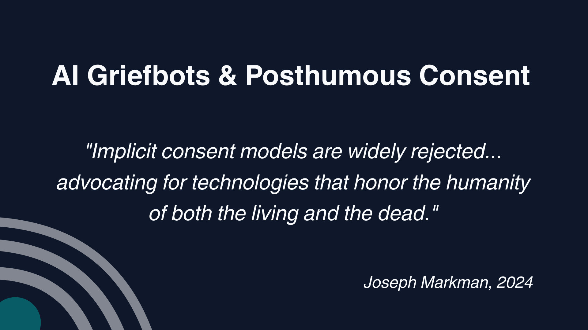
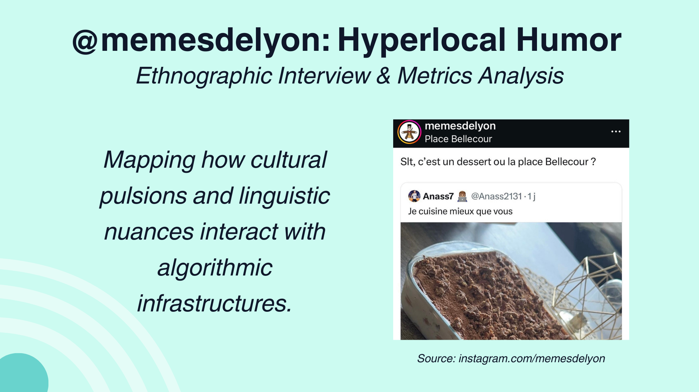
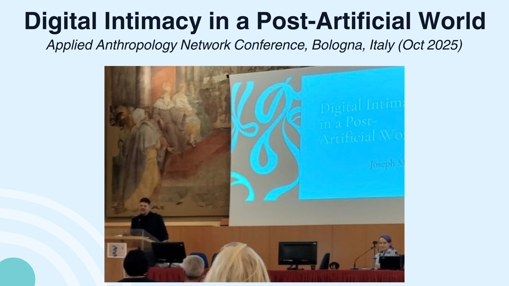
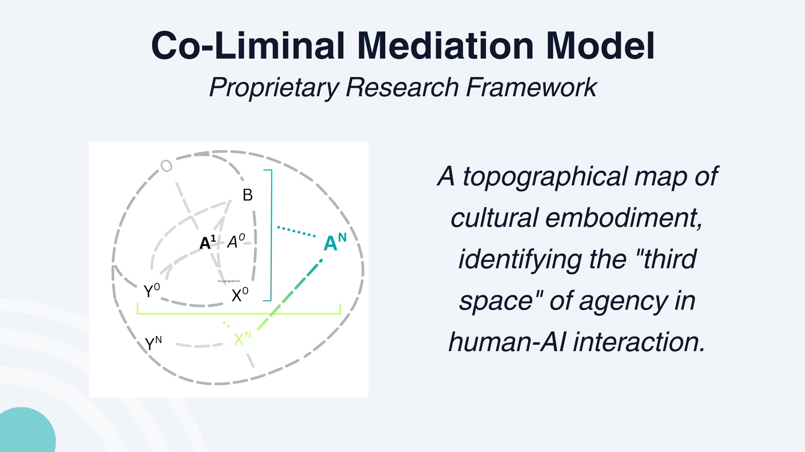
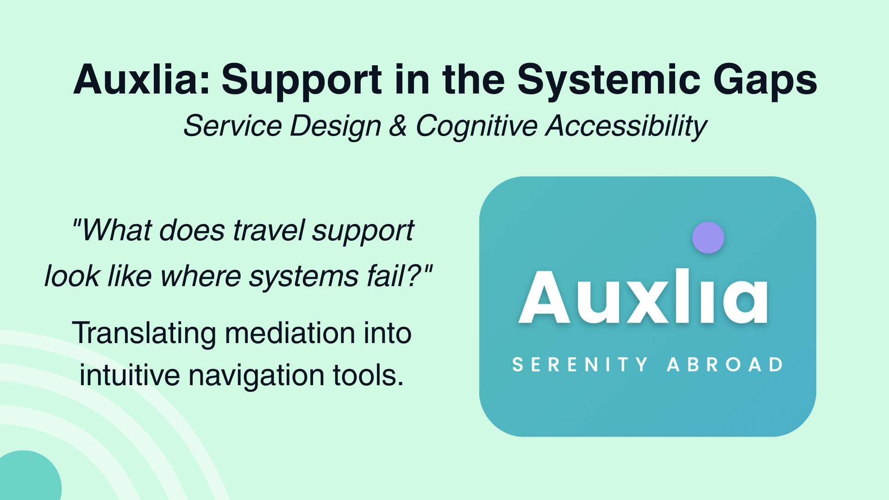

Joseph Markman
Digital Anthropologist | UX Researcher | Intercultural Mediator
Overview
Multidisciplinary Researcher and Strategist working at the intersection of culture and technology. Expertise in applying ethnographic methods to digital ecosystems, AI ethics, and service design.
Expertise
- Digital anthropology & online culture
- AI ethics, governance & perception
- UX research & qualitative design methods
- Socio-technical strategy for emerging tech
Selected Projects





Publication: Ethical frameworks for digital remains and posthumous data rights.